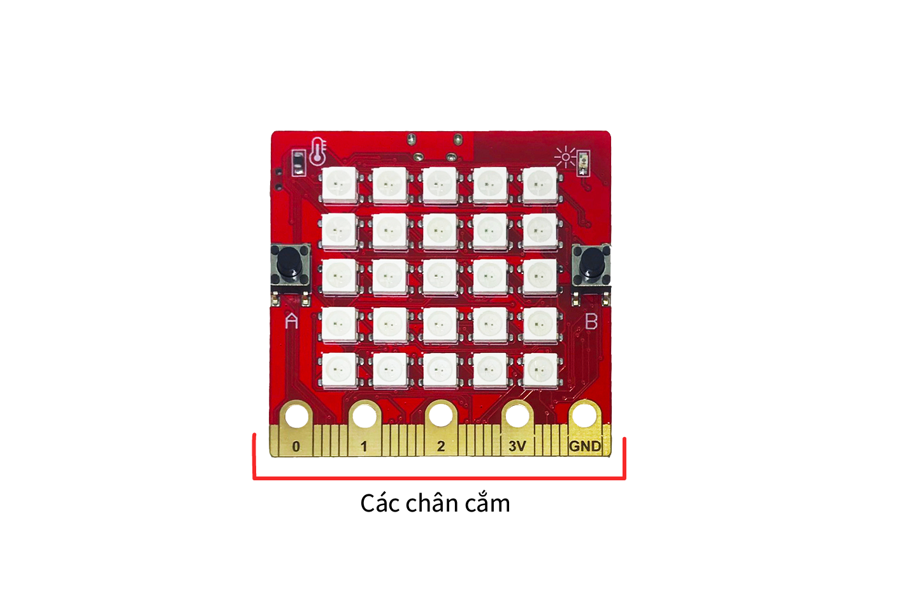
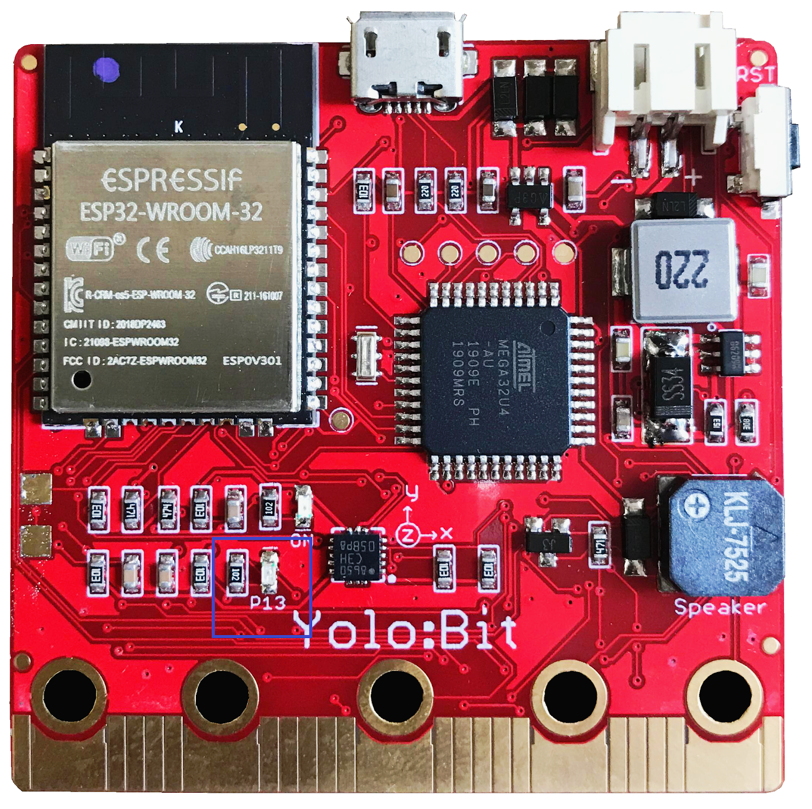

Chân cắm mở rộng
Ở dưới cùng Yolo:Bit có dãy các chân cắm mở rộng màu vàng, giúp Yolo:Bit mở rộng thêm chức năng. Các chân cắm này gọi là chân cắm input/output (gọi tắt là IO) vì chúng có thể dùng để nhận được thông tin hay xuất ra thông tin điều khiển.
{kind=link}
Có tổng cộng 20 chân cắm, tuy nhiên một số chân được làm to ra và đánh tên là 0, 1, 2, 3V và GND giúp dễ dàng sử dụng với kẹp cá sấu để nối dây.
Mỗi chân cắm IO có thể điều khiển bởi đối tượng pinN trong thư viện MicroPython của YoloBit với N được đánh số từ 0 đến 20 ví dụ như pin0, pin1, pin2… Hai chân cắm 3V và GND là chân nguồn nên chúng ta không điều khiển chúng nhé.
Bật tắt chân I/O
Trước tiên chúng ta thử bật các chân I/O này xem sao. Bạn có thể dùng một bóng đèn Led để nối với chân nào đó trên hàng chân I/O và 1 đầu còn lại nối với GND. Khi đó nếu bật chân IO đó lên thì Led sẽ sáng. Trên Yolo:Bit cũng có tích hợp sẵn một đèn Led màu xanh lá cây nối với chân 13, chúng ta có thể thử bật tắt chân này sau mỗi 1 giây xem sao.
{kind=link}
from yolobit import *
while True:
pin13.write_digital(1)
sleep_ms(1000)
pin13.write_digital(0)
sleep_ms(1000)
Sau khi chạy chương trình, bạn quan sát sẽ thấy đèn Led tích hợp bật tắt sau mỗi 1 giây. Để điều khiển bật hoặc tắt một chân IO, bạn dùng hàm write_digital() và truyền vào giá trị 1 (để bật) hoặc 0 (để tắt). Như trong chương trình ở trên, nếu bạn muốn bật chân 13 lên thì dùng câu lệnh pin13.write_digital(1).
PWM ( Pulse-width modulation)
Trong nhiều trường hợp chúng ta không chỉ muốn bật hoặc tắt chân I/O mà chúng ta còn muốn điều chỉnh mức độ bật nhiều hay ít. PWM là một kỹ thuật giúp chúng ta làm được việc này. Ví dụ, trong chương trình dưới đây chúng ta muốn bật chân 13 từ với mức độ từ 0 đến tối đa là 1023, khi đó đèn Led sẽ từ trạng thái tắt đến sáng dần và đến mức tối đa.
from yolobit import *
while True:
for i in range(1023):
pin13.write_analog(i)
sleep_ms(10)
Thay vì dùng hàm write_digital() thì ta dùng hàm write_analog() và truyền vào giá trị từ 0 đến 1023. Trong chương trình trên, ta dùng hàm range() đã tìm hiểu trong các bài trước để tạo ra một danh sách các số từ 0 đến 1023.
Ngoài ra, chúng ta có thể đọc được trạng thái bật hoặc tắt của các chân IO thông qua hàm read_digital(). Các chân cắm đặc biệt là 0, 1, 2 còn có thể đọc được trạng thái bật ở mức độ bao nhiêu, còn gọi là chế độ analog input thông qua hàm read_analog().
Cuối cùng, chúng ta hãy thử một tính năng đặc biệt có trên các chân 0, 1 và 2. Đó là khả năng cảm biến chạm. Chương trình sau sẽ phát ra âm thanh khác nhau mỗi chúng ta chạm vào các chân này.
from yolobit import *
import music
while True:
if pin0.is_touched():
music.pitch(400, 50)
if pin1.is_touched():
music.pitch(800, 50)
if pin2.is_touched():
music.pitch(1000, 50)
Sau khi chạy chương trình, bạn hãy chạm tay vào thử các chân 0, 1 và 2 để xem các âm thanh được phát ra như thế nào nhé.